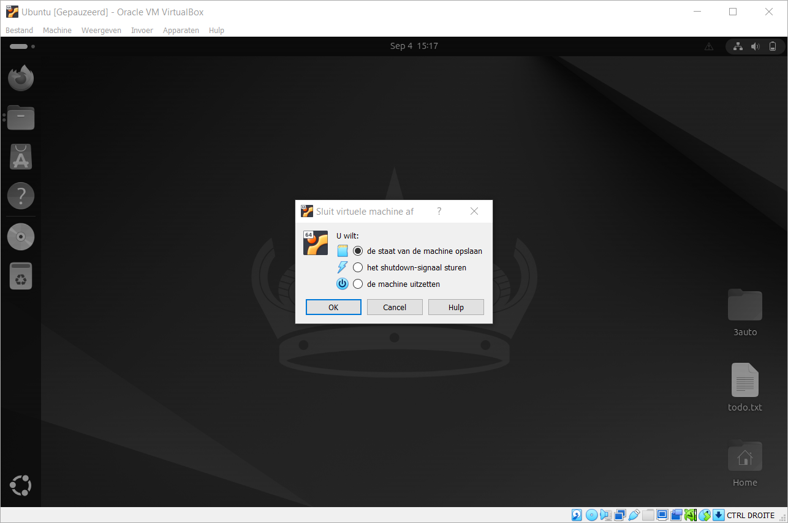

De laatste twee commando's van de oefening: je pakt je werk in tot één bestand en pakt het weer uit, en daarna zet je de machine op de juiste manier uit.
Waar Windows zip gebruikt, gebruikt Linux tar.gz. Die naam bestaat uit twee delen, want er gebeuren twee dingen na elkaar.
| Deel | Waar het voor staat | Wat het doet |
|---|---|---|
tar |
tape archive | Plakt mappen en bestanden achter elkaar tot één bestand. Het maakt niets kleiner |
gz |
gzip | Comprimeert dat ene bestand met een vrij compressieformaat |
Zip doet die twee dingen in één keer en per bestand. Doordat gzip het samengeplakte geheel comprimeert, haalt tar.gz meestal een kleiner resultaat bij veel kleine bestanden.
Ga naar je eigen map en controleer dat backup er niet meer staat. Staat ze er nog,
wis ze dan met rm -r backup.
Maak een gecomprimeerd archief van de map automatisering.
automatisering/ automatisering/todo.txt automatisering/b.txt automatisering/c.txt automatisering/d.txt
De vier letters achter het streepje zijn vier opties die je gecombineerd hebt.
| Optie | Waar ze voor staat | Wat ze doet |
|---|---|---|
-c |
create | Maakt een nieuw archief aan |
-v |
verbose | Toont elk bestand dat erin gaat. Dat is de lijst hierboven |
-z |
gzip | Comprimeert het archief |
-f |
file | Zegt dat de naam van het archief erachter komt. Deze optie staat altijd laatst |
Kijk of het bestand er staat.
total 124K
drwxr-x--- 17 elm elm 4.0K Sep 4 15:12 .
drwxr-xr-x 3 root root 4.0K Aug 22 15:41 ..
drwxrwxr-x 2 elm elm 4.0K Sep 4 14:31 automatisering
-rw-rw-r-- 1 elm elm 235 Sep 4 15:12 backup.tar.gz
-rw------- 1 elm elm 105 Aug 27 11:03 .bash_history
drwxr-xr-x 3 elm elm 4.0K Sep 4 14:35 Desktop
...
Een map van vier bestanden past hier in 235 bytes, want drie van die bestanden zijn leeg.
Maak een lege map en ga erin staan.
Pak het archief hier uit. Het staat een map hoger, dus je verwijst ernaar met
...
automatisering/ automatisering/todo.txt automatisering/b.txt automatisering/c.txt automatisering/d.txt
De enige optie die verschilt is de eerste: -x van extract in plaats van
-c van create. De drie andere doen hetzelfde als daarnet.
Controleer wat er uitgekomen is.
total 12K drwxrwxr-x 3 elm elm 4.0K Sep 4 15:14 . drwxr-x--- 18 elm elm 4.0K Sep 4 15:14 .. drwxrwxr-x 2 elm elm 4.0K Sep 4 14:31 automatisering
Er staat een map automatisering in, en niet meteen de vier bestanden. Dat komt
doordat je bij het inpakken de map zelf meegegeven hebt, dus die zit mee in het archief.
Kijk in die map of alles er is.
total 12K drwxrwxr-x 2 elm elm 4.0K Sep 4 14:31 . drwxrwxr-x 3 elm elm 4.0K Sep 4 15:14 .. -rw-rw-r-- 1 elm elm 0 Sep 4 13:58 b.txt -rw-rw-r-- 1 elm elm 0 Sep 4 13:58 c.txt -rw-rw-r-- 1 elm elm 0 Sep 4 13:58 d.txt -rw-rw-r-- 1 elm elm 26 Sep 4 13:55 todo.txt
Vier bestanden, met dezelfde datum als in de oorspronkelijke map: tar bewaart die
mee. En het bestand heet d.txt en niet a.txt, want je hebt het
hernoemd voor je het archief maakte.
Met tar -tvzf backup.tar.gz krijg je de inhoudsopgave van een archief zonder dat er iets
op je schijf verschijnt. De t staat voor table of contents.
Heropstarten en uitzetten doe je allebei met shutdown. Dat mag alleen de root gebruiker, dus
er hoort sudo voor.
Bekijk eerst welke opties het commando heeft.
De drie vormen die je gebruikt staan hieronder. Kies er een en start de machine opnieuw op.
De eerste herstart binnen vijf minuten, de tweede meteen, en de derde is een kortere schrijfwijze van de tweede. Het getal is er voor een server waar nog iemand op werkt: die krijgt dan een waarschuwing voor de machine weggaat.
Meld je opnieuw aan, open een terminal en zet de machine volledig uit.
De -h staat voor halt: de machine gaat uit en komt niet terug.
Je kan de virtuele machine ook vanuit VirtualBox zelf sluiten. Klik het venster weg en je krijgt drie keuzes.

| Keuze | Wat er gebeurt |
|---|---|
| De staat van de machine opslaan | Het werkgeheugen gaat naar de schijf en de machine bevriest. Bij de volgende start staat alles open zoals je het achterliet |
| Het shutdown-signaal sturen | Ubuntu krijgt hetzelfde signaal als bij shutdown -h now en sluit zichzelf
netjes af |
| De machine uitzetten | De stroom valt weg zonder dat Ubuntu iets merkt. Bestanden die op dat moment openstonden, kunnen beschadigd raken |
Daarmee is de begeleide oefening afgewerkt. Op de volgende pagina staat het document dat je invult en indient, en dat vertrekt van de mappen die je hier gemaakt hebt.